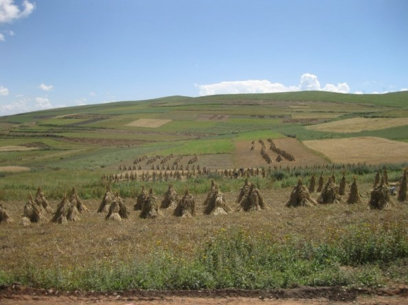

中国的学者在古生物学和考古学这类需要苦工但不一定要有高科技的科学上早就占有很高的地位，最近这几年他们的高科技能力赶上来了，所以论文在世界顶尖的两个科学学术期刊（Science和Nature）里出现的频率更是越来越高。今天我来简单介绍一下最近Science上一篇很有意思的新论文，它是由兰州大学的一个团队写的，有兴趣的读者可以到这里http://www.sciencemag.org/content/early/2014/11/19/science.1259172看原文。
目前学术界的共识是Homo Sapiens（智人，即所有的现存人类共属的物种）离开非洲大陆进入西亜之后，后来成为黄种人的部族基本上沿海岸线向东扩张。在东南亜驻足一段短时间之后，东亜族（即中国、日本和韩国人）的祖先和马来族分手，北上进入长江和黄河流域。对藏人的DNA分析早已证明他们也属于这一族，所以他们的祖先应该是从黄河流域的甘肃一带出发，经青海而入藏的。现代藏人在基因上和汉人的主要差别在于一些使其血液的带氧能力加强的突变，可以不受高山症的威胁。基因学家估计这些突变是很新的，最重要的一个只有八千年的歷史。这些突变似乎是由雪巴族（Sherpas，现居尼泊尔的高山区，以担任登山向导闻名）最先获得的。汉人入藏之后，经由通婚也得到了这些突变，他们的后代就是藏人。
中国的考古学界先前已经知道少数游牧部族（可能是雪巴族的祖先）在至少两万年前就开始进入西藏高原，但是永久性的部落和村庄必须依赖农业，而亜洲的农业始自一万年前的长江流域，那时南方的汉人发明了种大米（Rice）。随后黄河流域的北方汉人（其实汉人和中国其他民族并不是依血统分别的，而是把在长江和黄河中下游平原从事农耕的就叫做汉人）驯化了小米（Millet）。大米和小米是所有人类粮食作物（Grain Crop，即含高淀粉的主食）之中，唯一在东亜被驯化的，其他的不是来自美索不达米亜（Mesopotamia），如各种麦类，就是来自美洲，如玉米、马铃薯和番薯。这篇新论文的作者们发现，藏人的祖先在5500年前开始在西藏高原的东北面建立村落，当时种的是华北的主要作物：小米。小米耐旱，抗高温，不需肥料，但是只能生长在海拔2500公尺以下的坡地；超过这个高度，即使在夏天昼夜温差也太大，小米熬不过晚上的霜。所以这些古藏人的聚落也因此而被限制在2500公尺的海平线以下，不能深入西藏。
到了3600年前，也就是夏末商初，古藏人忽然开始往西藏腹地迁移，农耕生活一路进入西藏高原，没有几百年就占满全西藏海拔4700公尺以下的地域。兰州大学的这个团队发现，所有海拔2500公尺以上的村落，种的都不是小米了，而是大麦（Barley）。大麦的确比小米耐寒得多，到今天仍然是西藏的主要作物。不过大麦来自Mesopotamia，一直到夏末商初才传入中国。在华北，它只是供人换换口味的选择；在西藏，它却是把农业文明带进高原的功臣，使一群从事农耕的汉人得以和当地的游牧部族通婚融合，而其结果就是一个新的民族：藏人。
西藏高原上的大麦田。大麦至今仍是藏人的主食。
我读这个消息的时候，觉得3600年前这个时段很有意思，因为青铜器也是那时传入中国的。很可能那是丝路的第一次开通。当时更先进的两河流域文明给了东方新的作物和冶金，可能还有其他的农业和工业技术。不过到了短短几百年后的周朝，中国的科技和经济就赶上了西方，此后欧亜大陆的两极并驾齐车了1500年之久，直到隋帝国的建立，使中国一举超越了陷入黑暗时期的欧洲，并在其后的一千多年里领先全世界。其实整个人类的世界史就是中西轮流领风骚的歷史，丝路一直是中西之间一条极为重要的脐带。现在习近平又以丝路做为新战略的基础，还真是与歷史相呼应。
发表日期 : 2014-12-21 10:01
姚广孝 留言 :
王孟源 回复:
KELLY 留言 :